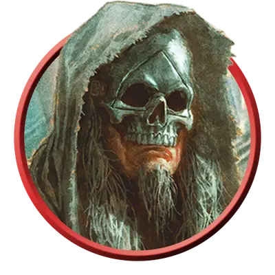

Культист Миркула
Cultist of Myrkul
Средний или Маленький Гуманоид, Нейтральный Злой

Класс Защиты 16 Инициатива +6 (16)
Хиты 204 (24к8 + 96)
Скорость 30 футов
| мод | спас | ||
|---|---|---|---|
| СИЛ | 13 | +1 | +1 |
| ЛОВ | 14 | +2 | +2 |
| ТЕЛ | 18 | +4 | +8 |
| мод | спас | ||
|---|---|---|---|
| ИНТ | 20 | +5 | +9 |
| МДР | 18 | +4 | +8 |
| ХАР | 15 | +2 | +6 |
Сопротивление урону Некротический
Чувства Тёмное зрение 60 футов, пассивное Восприятие 14
Языки Общий
Опасность 11 (7 200 опыта; БВ +4)
Особенности
Всё ближе к мертвецам. Когда культист Окровавлен, он получает иммунитет к состояниям Испуганный и Отравленный.
Действия
Мультиатака. Культист совершает три атаки Некротическим всплеском.
Некротический всплеск. Бросок рукопашной или дальнобойной атаки: +9, досягаемость 5 фт. или дистанция 120 фт. Попадание: 27 (5к10) Некротического урона, и цель не может восстанавливать Хиты до конца следующего хода культиста.
Сотворение заклинаний. Культист Миркула сотворяет одно из следующих заклинаний (заклинательная характеристика — Интеллект, Сл спасброска заклинаний 17):
Неограниченно: Разговор с мёртвыми, Чудотворство
1/день каждое: Круг смерти, Поднятие мертвеца
Бонус мастерства +4
Среда обитания Город
Сокровища Личные, Реликварные
Культисты
Фанатики и пророки конца
С помощью магии и сомнительных практик культисты распространяют радикальные воззрения. Пока одни втайне охотятся за оккультным знаниями, другие организуют тайные общества, стремящиеся привести мир к страшному концу.
Обычно в основе культа лежит иерархия, построенная вокруг харизматичного и властного лидера. Хотя члены культа могут действовать самостоятельно, они подчиняются указаниям от вышестоящих участников, наделённых сверхъестественными способностями. Культы могут строиться на основе любой мистической традиции, но зачастую они служат сверхъестественным силам.
Культисты Миркула властвуют над мёртвыми: поднимают нежить, терроризируют живых или выпытывают тайны, известные лишь усопшим. Большинство из них больше интересуются накоплением знаний, чем власти или богатства. Многие культисты Миркула — зловещие манипуляторы, что копят некромантические знания и сбиваются в в культы, дабы делиться своими жуткими секретами. Тайны эти часто требуют отвратительных опытов, коими эти бессердечные культисты упиваются.
Мёртвая Троица
Авантюристы Бейн, Баал и Миркул некогда завладели божественной силой, но за свою гордыню были убиты. Все трое возродились и ныне известны как Мёртвая Троица. Каждый из них породил зловещие культы, что следуют их путями тирании, убийства и некромантии.
Сильнее прочих богов Мёртвая Троица влияет на Фаэрун — и в особенности на город Врата Балдура — самыми пагубными способами. Культисты, получающие повеления напрямую от своего бога-покровителя, зачастую наиболее честолюбивы и опасны.
Планы культа
Культисты зачастую практикуют малоизвестные магические обряды или помешаны на трактовке древних пророчеств. В основе их веры лежит почитание сверхъестественных покровителей: божеств, потусторонних сущностей, коварных чужеродных разумов или других загадочных сил.
Совершите бросок по таблице «План культиста» для вдохновения или выберите сами заветную цель культиста.
План культиста
| 1к6 | Культист стремится… |
| 1 | Свергнуть существующий порядок, завершить эпоху или уничтожить мир. |
| 2 | Развеять лживую иллюзию привычной реальности и раскрыть забытые или ужасные истины. |
| 3 | Распространить свою веру с помощью ментального контроля и сверхъестественного принуждения. |
| 4 | Изменить географию мира, например затопить земли или пробудить вулканы. |
| 5 | Преобразовать жизнь в глобальных масштабах, изменяя тела или души других созданий. |
| 6 | Призвать своё божество или его вестника, оружие или царство в свой мир. |
Оккультные символы
Как правило, культы отождествляют себя с символами, которые воплощают их убеждения. Такие знаки можно найти на значимых для них объектах, а также на одеяниях и телах самих культистов. Они могут быть общеизвестными или иметь значение только внутри культа. Совершите два броска по таблице «Символ культа» для вдохновения или выберите сами описание знака тайного сообщества.
Символ культа
| 1к10 | Символом культа является… | Он представлен в виде… |
| 1 | Алхимический знак | Календаря или карты |
| 2 | Животное | Герба или эмблемы рода |
| 3 | Небесное тело | Сложной схемы |
| 4 | Знака божества | Метафорического образа |
| 5 | Стихия | Мистической сущности |
| 6 | Глаз | Частью уравнения |
| 7 | Геометрическая фигура | Повторяющегося узора |
| 8 | Буква или число | Ряда царапин |
| 9 | Часть чудовища | Простой пиктограммы |
| 10 | Череп | Оружия или инструмента |